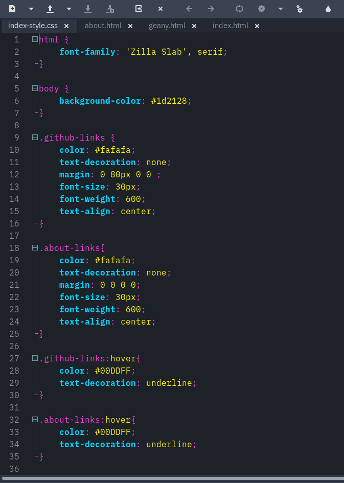

Geany

Download
Click here to download .zip file and unzip them
Activating Theme
On Unix-like operating systems:
- Copy the dantes.conf into ~/.config/geany/colorschemes/. Create it if the directory doesn't exist.
- Choose the theme on Geany by going to the view menu and selecting Change Color Scheme...
On Windows:
- Copy the dantes.conf into C:\Users\YourUserName\AppData\Roaming\geany\colorschemes. Create it if the directory doesn't exist.
- Choose the theme on Geany by going to the view menu and selecting Change Color Scheme...